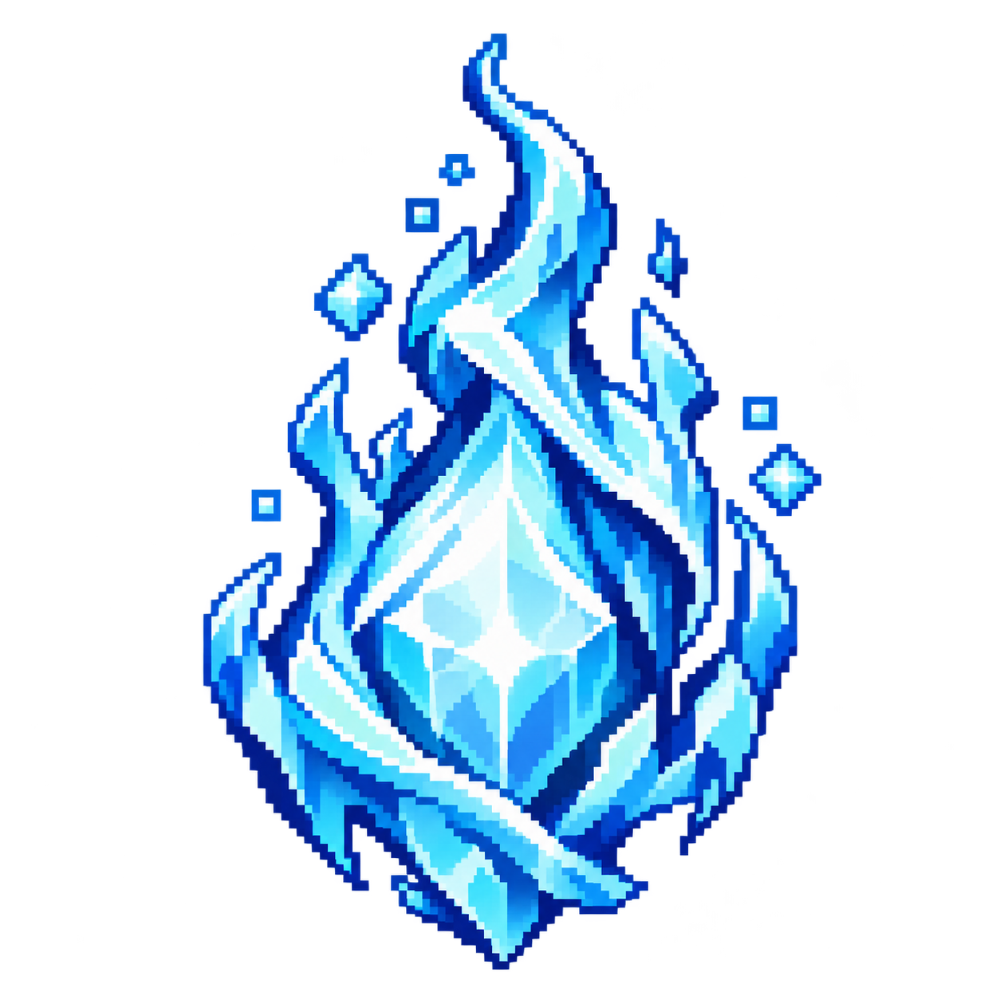

A TINY HERO · A WILD JOURNEY
장애물은 점프로, 악당은 공격으로 돌파하세요.두 번 누르면 더 높이 뛰어요.
CHOOSE YOUR POWER
두 속성의 힘과 속도는 같고, 공격 연출과 소리만 달라요.

다치지 않고 아이템 획득·악당 처치!5회 연속 점수 ×2 · 10회 연속 ×3
PAUSED
STAGE CLEAR
다음 모험이 기다리고 있어요.
이번 스테이지 기록
THE THREE STAGES
빠른 시작, 기본 장애물과 하이에나
떠다니는 유령과 촘촘한 함정
최고 속도와 거대 곰 보스
SETTINGS